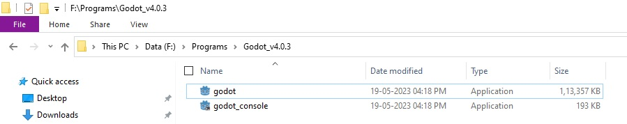
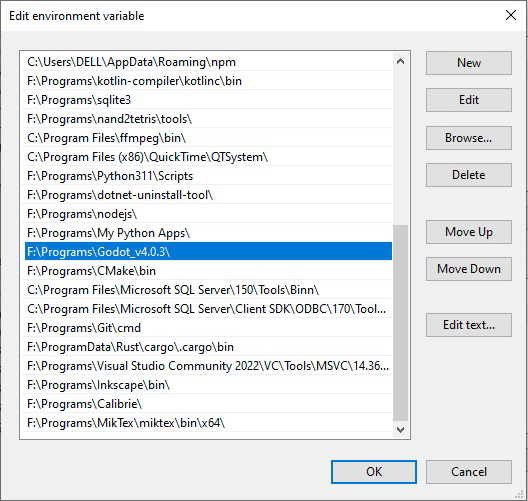
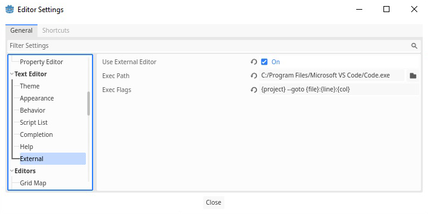
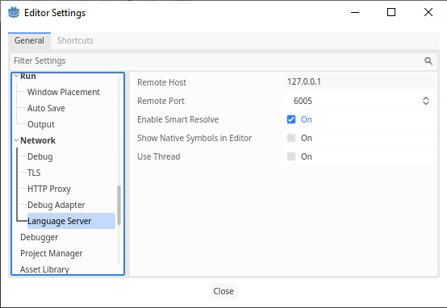
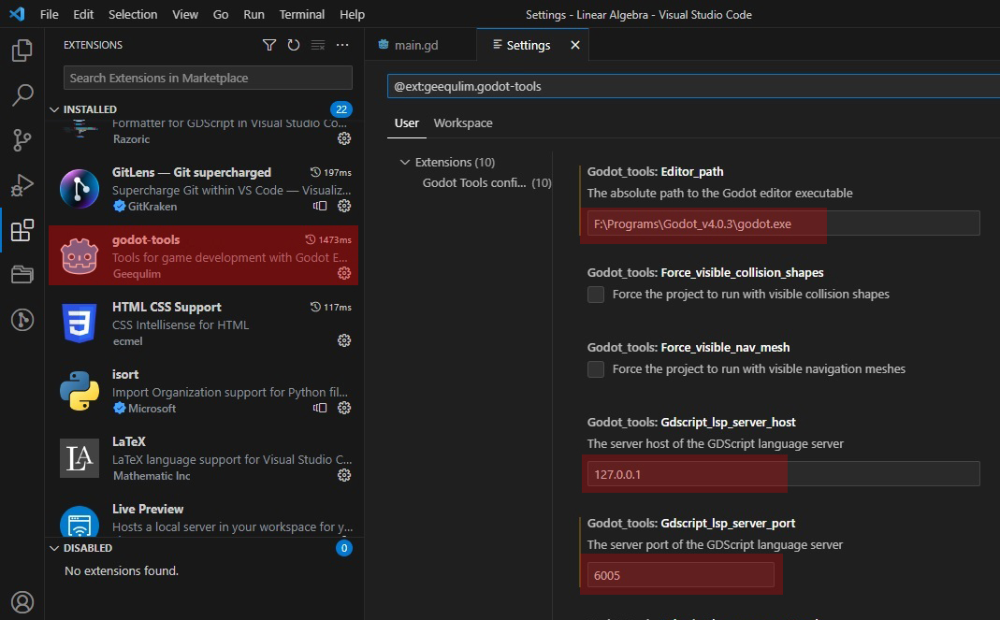

Godot with VSCode
- In Godot installation folder, change the names to godot and godot_console 
-
Add godot folder in Environment Variables

-
In Godot, enable external editing and set VSCode path.
Exec Path :C:/Program Files/Microsoft VS Code/Code.exe
Exec Flags :{project} --goto {file}:{line}:{col}
 -
In Network section of Editor Settings, note down the Remote Host and Remote Port in Language Server protocol.
 - Open Visual Studio Code. Install godot-tools extension.
-
In godot-tools extension settings, set proper values of Editor Path,LSP server host and LSP Server Port respectively.

Build Godot from source code
Build Godot Export Template